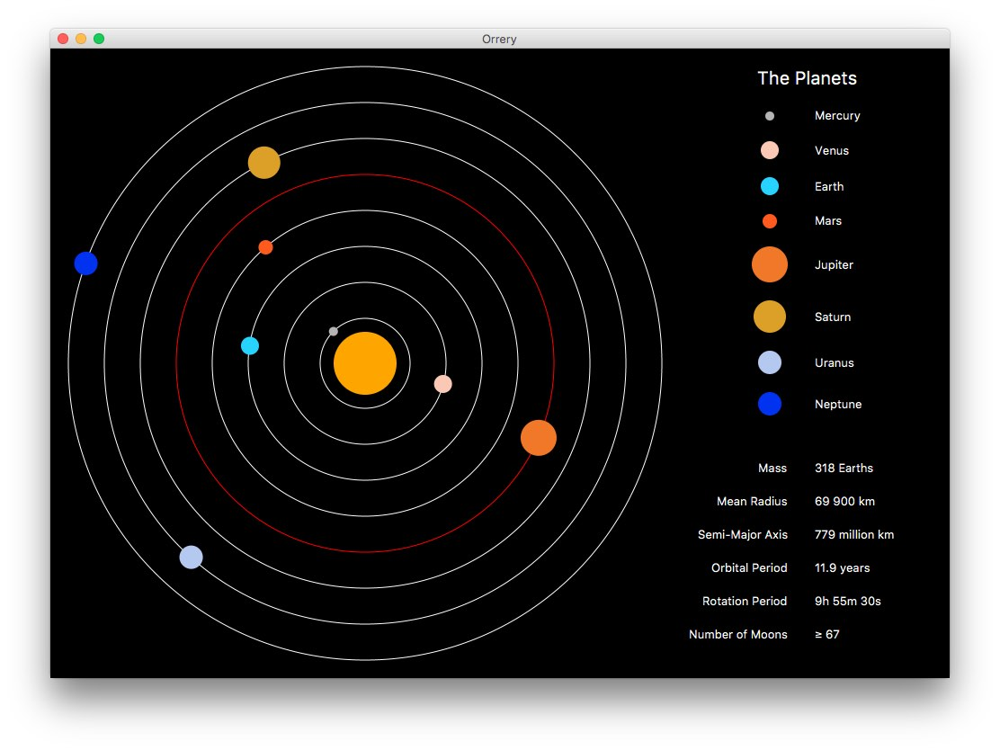
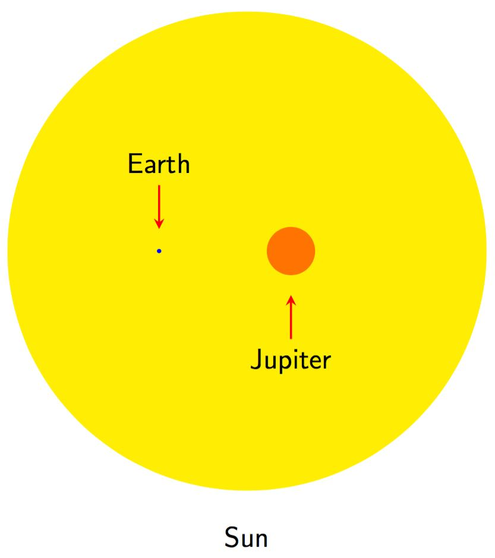
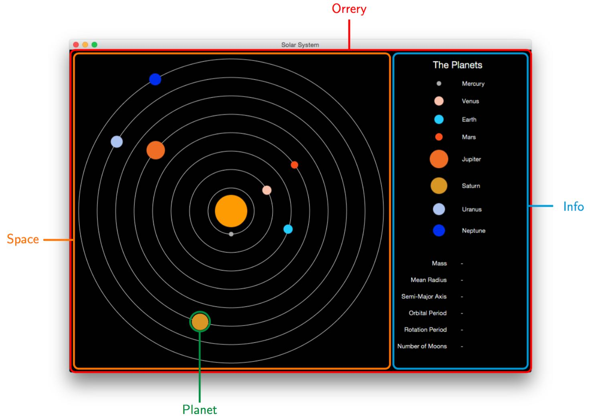

The Orrery
The inspiration behind this application are the orreries that were popular in the 18th-19th centuries. These are mechanical constructions that demonstrate the motion of the planets around the Sun using model spheres and clockwork. For this project, one of these constructions is recreated in digital form, and displays the movement of the eight planets around the Sun. It also displays a list of the planets on the right, in the order of increasing distance from the Sun. Below this, a panel is included to provide the user with some standard information about each planet, including mass, orbital period, and number of moons. Clicking on a planet in the list on the right updates this information, and also highlights the moving representation of the planet on the left.
The Science
Behind the aesthetics of the orrery there is an attempt to include some science in the application. The orbital periods of each planet are approximately to scale. Mercury is chosen to act as the reference point in this case, with its actual orbital period of approximately 0.2 years scaled to 1 second in the application. Mercury in fact has an orbital period closer to a quarter of a year, but the values are rounded to 1.d.p. in this application for simplicity. Me The periods of the other planets are then set relative to this, with Venus (orbital period of ~0.6 years) performing a full rotation about the Sun once every 3 seconds, the Earth once every 5 seconds, and so on.
Neither the planets' sizes nor their orbital radii are drawn to scale in this application. This is a commonality among orreries, and the figure below demonstrates why it is not practical to provide a reasonable representation of the Sun and planets when this is attempted. Instead the planets are all shown as circles of the same size, with the Sun appearing slightly larger to show that it is distinct from them. In addition, the orbital radii are depicted as increasing in regular increments, and the orbital paths shown as circular when in reality they are elliptical.
The relative sizes of the Earth, Jupiter and the Sun. Values for the radii taken from Wikipedia.
The info panel of the main application window provides six pieces of basic information about each planet. The data for this, and for the orbital periods used to define the motion of the planets, comes from each of their Wikipedia pages. The following describes this data, and the reasons for it being formatted the way it is. All numbers are rounded to 3.s.f. for clarity, except for the number of moons and those rotation periods that are given in hours, minutes and seconds instead of days.
- Mass
- The mass of the planet, given in Earth masses and rounded to 1.d.p. for clarity.
- Mean Radius
- The average radius of the planet, given in km.
- Semi-Major Axis
- It is not possible to give a single value for the orbital radius of a planet in the Solar System, since their orbits are elliptical rather than circular. The semi-major axis is conventionally given instead, and refers to the radius of the ellipse at its greatest diameter (widest point).
- Orbital Period
- The time taken for the planet to orbit the Sun, given in Earth years for clarity.
- Rotation Period
- The time it takes for the planet to rotate once about its axis, also known as the length of a full day. Given in either Earth days or hours, minutes and seconds, depending on the scale.
- Number of Moons
- The number of known moons that the planet has orbiting it.
Class Breakdown
Each of the classes in the source code represented in terms of what they control on the screen.
There are four classes in this application, Orrery, Planet, Space and Info. Each of them is tied to some form of graphical output on the display, as can be seen in the figure above. This section will explain the functionality that each of them provides.
Orrery
This is the core of the application, and contains the main method that is used as the entry point. It inherits from the JavaFX Application class, and contains the required start method that is called as part of the graphical initialisation. This method sets up the main Stage object and builds out the rest of the application from the remaining three classes through the buildLayout method. The Orrery object is used to manage the contents of the window, and encapsulates an instance of the Space class and an instance of the Info classs, corresponding respectively to the moving planets on the left and the information panel on the right.
Originally, the Orrery class contained and managed the Planet class directly. However, as the interface began to build out, and with the development of the information panel, the functionality began to blur and the class no longer had a clear definition. Therefore, the planets were split off into a separate Space class that just handled their animation, and the information panel was split off into the Info class. This refocused the Orrery class to the role it fulfils currently, the top-level class in charge of managing the application and the layout of the window.
Planet
The eight planets that orbit the Sun are all instances of this class. It is used to encapsulate the data unique to each of them, including name, information about the orbital path, and the properties that appear in the info section. It contains a collection of private methods used to set up the planet's orbital animation path, its appearance on the screen, and the storage of its properties. It also contains a group of setter and getter methods that are needed by other classes in the application.
At first, each planets properties (i.e. the data displayed in the information panel) were stored in the Info class using hashmaps. However, it soon became clear that this was unecessary duplication of data, and it was decided that the code would become both functionally and conceptually clearer if this information was stored within the Planet class.
Space
This class represents the left-hand side of the main window. It creates and maintains each of the moving planet objects, their orbital paths, and the Sun in the centre. As part of the process of building the planets, this class also reads in their data from file. All of this data is stored in a delimited text file, called planetdata.txt and situated in the root directory, so that this information can be modified without digging through the source code. If there is a problem with this file, for whatever reason, this class will throw an error that is passed up to, and handled by, the Orrery class.
Broadly speaking, the functionality of this class falls into three related tasks. Firstly, some of the methods are responsible for instantiating the planet objects, which are then stored in a hashmap. Secondly, it must gather together the group of JavaFX objects that it controls, including the planets, the background and the Sun, and set up their layout, so that they are ready when the Orrery class launches the graphical display. Finally, it must provide access to the various objects that it manages, such as the planets, so that other classes like Info can retrieve information about them.
Info
The information panel on the right-hand side of the screen is controlled by this class. It is split into two parts, through use of JavaFX gridpanes, with the top displaying a list of the planets, and the bottom displaying data about them. It is also responsible for handling click events on the elements of the top panel, which signify user selection of a planet. When these events occur it communicates with the Space object in order to retrieve the data it needs about the planets, and to update the colours of the orbital paths when a planet is selected.
The top panel contains Circle objects representing the planets and Label objects displaying their names. Each of these objects has a click event handler attached to it that is tied to the planet's name, which is used to identify the specific data that has to be retrieved and the particular graphical elements that must be updated when it is activated. The bottom panel is simply a set of labels that are empty to begin with, and are then updated with information about a specific planet by the click event handler.
JavaFX vs Swing
There are a few reasons why JavaFX was chosen over the commonly-used Swing GUI toolkit. JavaFX is being promoted by Oracle as the modern alternative to Swing, with the suggestion that new development work target the JavaFX API instead. The intention apppears to be to use it to combat the rise of graphical applications based upon web technologies. Furthermore, it is meant to contain a more up-to-date feature set, and includes some additional functionality that previously relied on external libraries, such as 3D. It is also designed to be interoperable with Swing, in order to maintain support for existing projects and to allow it to leverage libraries that are written using that API.
Development Tools
There are no third-party libraries used in this project, everything, including JavaFX, comes bundled with the standard Java 8 distribution. Apache Ant was used to build and run the code, and also to generate the documentation using javadoc.
Future Direction
Given more time with this project there are some possible additional features that could be added. Adding 3D models of some of the planets, complete with images of their surfaces and user controls to rotate and zoom in, should be possible. The advantage of choosing JavaFX for this application means that it should be possible to implement this without relying on additional libraries that are not bundled as standard with Java.